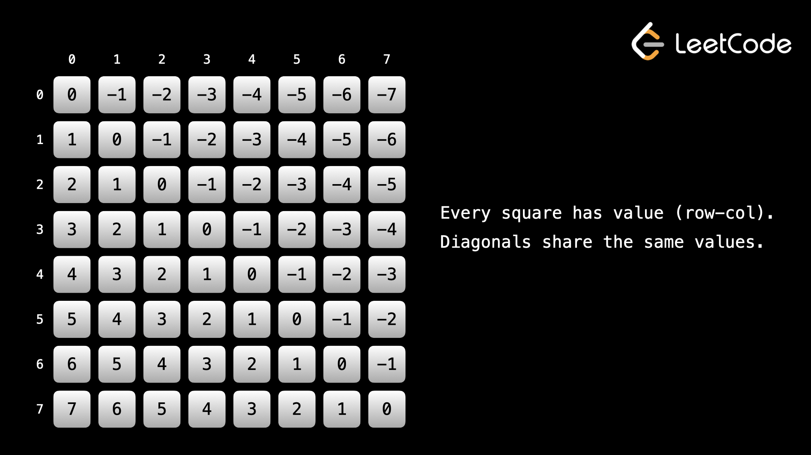
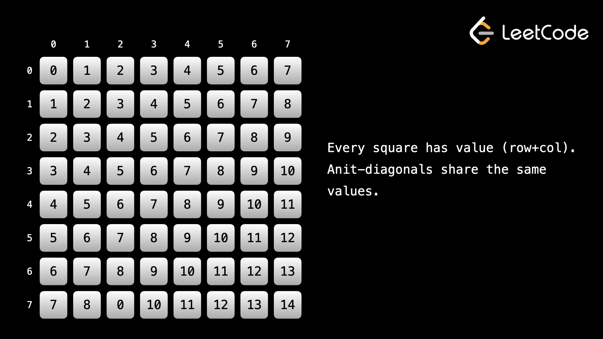
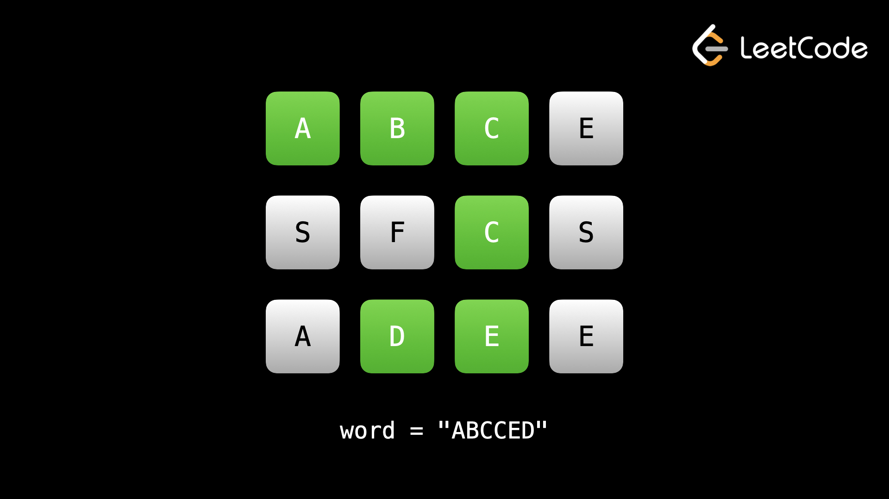

Проблемы генерации относительно просты и обычно имеют один и тот же формат — давайте посмотрим на некоторые другие проблемы с backtracking.
Example 1: 39. Combination Sum
Учитывая массив различных candidates из положительных целых чисел и целевое целое число
target, верните список всех
уникальных комбинаций кандидатов, в которых сумма выбранных чисел равна target. Одно и то же
число может быть выбрано из кандидатов неограниченное количество раз. Две комбинации уникальны, если частота
хотя бы одного из выбранных чисел различна.
Поскольку проблема заключается в том, чтобы генерировать комбинации, мы можем повторно использовать часть логики из предыдущей статьи. Чтобы избежать дублирования, например [2, 2, 3] и [2, 3, 2], мы должны передать целочисленную переменную start, которая указывает, где мы начинаем итерацию (та же цель, что и i в предыдущей статье). В предыдущих задачах, если бы мы добавляли ith элемент, мы бы передали i + 1, потому что нам не разрешалось использовать один и тот же элемент более одного раза. В этой задаче нам разрешено использовать один и тот же элемент несколько раз, поэтому вместо этого нам следует передать i.
Нам нужно найти комбинации, которые в сумме соответствуют target. Чтобы отслеживать текущую сумму, мы можем передать целочисленную переменную curr. Если добавление к curr приведет к превышению целевого значения target, мы знаем, что нам не следует исследовать этот путь дальше. Если curr == target, мы знаем, что можем добавить его в наш ответ.
В этой задаче у нас будет аргумент path, представляющий числа в текущем пути (это то, что curr сделал в предыдущей статье). У нас будет аргумент start, который указывает, с чего во входных данных мы должны начать итерацию (это то, что i сделал в предыдущей статье). Наконец, у нас будет curr, представляющий сумму всех чисел в пути. Хотя в этом нет необходимости, поскольку мы могли бы просто вычислить его по path, это делает наш алгоритм более эффективным, поскольку нам не нужно будет вычислять его с нуля на каждом узле.
Когда мы добавляем элемент в path и переходим к дочернему узлу, нам также следует добавить значение в curr. Когда мы перемещаемся вверх по дереву и удаляем элемент из path, нам также следует вычесть значение из curr. Если добавление элемента приведет к тому, что curr превысит целевое значение target, нам не следует его добавлять — входные данные не имеют отрицательных чисел, поэтому, если мы превысим target, мы никогда не достигнем цели.
Наш базовый случай — это когда curr = target. Хотя базовыми вариантами будут конечные узлы, не все конечные узлы будут базовым вариантом. Если у нас есть узел, где curr < target, но добавление любого числа приведет к тому, что curr > target, то это тоже будет лист. Нам следует добавлять путь к ответу только в том случае, если curr = target.
def backtrack(path, start, curr):
if curr == target:
ans.append(path[:])
return
for i in range(start, len(candidates)):
num = candidates[i]
if curr + num <= target:
path.append(num)
backtrack(path, i, curr + num)
path.pop()
ans = []
backtrack([], 0, 0)
return ans
Временная сложность этого алгоритма составляет примерно O(nT/M), где n = candidates.length, T = target, и M = min(candidates). Напомним, что рекурсию в целом можно представить как дерево. Максимальная глубина дерева в этой задаче T/M - - повторно используя наименьшее число, пока не превысим target. Каждый узел в дереве может иметь до n дочерних элементов, что дает нам O(nT/M).
Если не считать вывод как дополнительное пространство, в этой задаче используется пространство для пути и стека вызовов рекурсии, оба из которых O(T/M).
Example 2: 52. N-Queens II
Загадка с N ферзями — это знаменитая задача о том, как разместить n ферзей на шахматной доске
размером n x n
так, чтобы никакие два ферзя не атаковали друг друга. Учитывая целое число n, верните
количество различных
решений головоломки с N ферзями.
Для тех, кто не играет в шахматы: ферзь может атаковать по занимаемой строке, столбцу и диагонали.
Головоломка с n ферзями — классический пример обратного поиска и на самом деле очень распространенная задача, которая используется в университетах и колледжах для обучения обратному пути. В этой задаче нам нужно разместить n ферзей, по одному ферзя в каждой строке, столбце, диагонали и антидиагонали.
Начинаем со строки: это легко. Мы можем просто рассматривать одну строку для каждого backtrack — мы можем передать row в качестве аргумента, и когда row = n, мы знаем, что нашли правильное решение.
Для столбцов: у нас есть столбцы с номерами от [0, n], и в каждом столбце может быть только один ферзь. Мы можем использовать набор cols, в котором хранятся уже занятые столбцы. Когда мы добавляем ферзя, мы можем добавить столбец в cols, а когда мы возвращаемся и удаляем ферзя, мы можем удалить столбец из cols.
Для диагоналей и антидиагоналей (диагональ идет сверху слева вниз справа, антидиагональ идет сверху справа вниз слева) мы можем использовать хитрый трюк.
Все квадраты по диагонали имеют одинаковое значение для row – col. Поскольку диагонали перемещаются вниз и вправо, row и col увеличиваются, поэтому их разница никогда не меняется. Мы можем использовать набор, подобный столбцам, чтобы убедиться, что мы не размещаем несколько ферзей на одной диагонали.

Все квадраты на антидиагонали имеют одинаковое значение для row + col. Поскольку антидиагонали движутся вниз и влево, row увеличивается, а col уменьшается, поэтому их сумма никогда не меняется. Мы можем использовать набор, подобный столбцам и диагоналям, чтобы убедиться, что мы не размещаем несколько ферзей на одной антидиагонали.

Для каждой строки мы можем перебирать столбцы, вычислить значение диагонали и антидиагонали текущего квадрата и убедиться, что ни один из трех уже не занят. С точки зрения реализации мы можем использовать общий формат.
До сих пор проблемы, которые мы рассматривали в этой главе, имели очень четко определенные входные данные, с которыми мы работали, например массив целых чисел.
В этой задаче мы имеем дело с чем-то, что немного сложнее представить в коде — с шахматной доской.
Одним из способов решения этой проблемы было бы передать матрицу n * n в качестве аргумента функции возврата (буквально сохранить шахматную доску). Однако это не обязательно и очень неэффективно.
Мы должны стараться использовать для представления шахматной доски как можно меньше. В этой задаче нас беспокоят только нападения ферзей друг на друга. Когда мы пытаемся разместить ферзя, мы должны разместить его на поле, которое в нашем текущем состоянии не атаковано. Поскольку ферзь атакует строку, столбец и диагонали, которые он занимает, мы можем просто использовать аргумент для каждого из них.
Как упоминалось выше, мы используем хитрый трюк с диагоналями, чтобы мы могли использовать набор для эффективного определения того, атакована ли уже диагональ. Нам также нужно использовать только целое число для текущей row, а затем мы просто помещаем по одному ферзя в каждую строку.
Как только мы узнаем, как представлять доску, мы просто используем обычный шаблон возврата. В каждом ряду попробуйте разместить ферзя в каждом столбце, если поле не атаковано. «Разместите» ферзя, обновив переменные состояния, чтобы указать, какой столбец/диагональ атакует вновь размещенный ферзь. При возврате «удалите» ферзя с доски, отменив обновления, которые вы сделали при размещении ферзя.
Мы знаем, что у нас есть правильное решение, когда row = n (мы поставили n ферзей).
def backtrack(row, diagonals, anti_diagonals, cols):
# Base case - N queens have been placed
if row == n:
return 1
solutions = 0
for col in range(n):
curr_diagonal = row - col
curr_anti_diagonal = row + col
# If the queen is not placeable
if (col in cols
or curr_diagonal in diagonals
or curr_anti_diagonal in anti_diagonals):
continue
# "Add" the queen to the board
cols.add(col)
diagonals.add(curr_diagonal)
anti_diagonals.add(curr_anti_diagonal)
# Move on to the next row with the updated board state
solutions += backtrack(row + 1, diagonals, anti_diagonals, cols)
# "Remove" the queen from the board since we have already
# explored all valid paths using the above function call
cols.remove(col)
diagonals.remove(curr_diagonal)
anti_diagonals.remove(curr_anti_diagonal)
return solutions
return backtrack(0, set(), set(), set())
Истинная временная сложность этого алгоритма на самом деле неизвестна, но она примерно равна О(n!). Аргумент состоит в том, что первый вызов будет рассматривать n вариантов. Следующий вызов будет рассматривать n - 2 варианта, поскольку один квадрат будет занимать один и тот же столбец, и как минимум один квадрат будет занимать диагональ/антидиагональ. Шаблон продолжается, поскольку следующий вызов после этого будет рассматривать n - 4 квадрата и так далее. Пространственная сложность O(n) из-за множеств и стека вызовов рекурсии.
Example 3: 79. Word Search
Учитывая сетку символов m x n и слово word, верните true, если word
существует в
сетке. Слово может
быть составлено из букв последовательно соседних ячеек, где соседние ячейки являются соседними по
горизонтали или по вертикали. Одна и та же буквенная ячейка не может использоваться более одного раза.

Входные данные должны выглядеть знакомо — это граф, в котором каждый квадрат является узлом, а между соседними квадратами есть ребра. Причина, по которой эта проблема связана с backtrack, а не только с DFS, заключается в том, что мы можем посещать квадрат несколько раз при одном и том же начальном вызове функции. Хотя нам не разрешено использовать квадрат для ответа более одного раза, существует несколько способов использовать квадрат для формирования разных кандидатов. Например, если мы начинаем с точки (0, 0), то путь вправо, а затем вниз — это другой путь, чем путь вниз, а затем вправо.
Нам по-прежнему следует использовать seen, как и в случае с DFS, чтобы избежать использования одной и той же буквы в одном и том же пути, но, в отличие от DFS, мы будем удалять из этого набора при возврате. Нам следует пересекать ребро только в том случае, если мы знаем, что путь может привести нас к ответу - поэтому мы также можем передать индексную переменную i, которая указывает, что мы в данный момент ищем word[i], а затем перейти только к (nextRow, nextCol), если это правильная буква. Поскольку ответ может начинаться с любого квадрата, нам нужно начать возврат со всех квадратов, в которых есть word[0].
Подводя итог: мы используем алгоритм в стиле DFS для обхода путей, используя набор, чтобы избежать многократного использования квадрата на одном и том же пути. Мы медленно пытаемся построить слово, переходя только к квадратам, в которых есть следующая буква.
Поскольку у нас есть граф, мы можем применить алгоритм, аналогичный DFS, для обхода матрицы. Мы выбираем квадрат со значением word[0] и начинаем с него. Затем ищем word[1] среди соседей. Если мы его находим, мы переходим к нему и ищем word[2] и так далее, пока не завершим слово или не достигнем точки, где мы не сможем продолжать построение слова.
Когда мы понимаем, что не можем продолжить, мы возвращаемся к предыдущему узлу (как в обычном DFS), но нам также следует удалить квадрат, который мы покидаем, из набора, который мы используем, чтобы избежать повторного посещения квадратов.
Этот набор не позволяет нам использовать букву более одного раза в данном пути, но как только мы начнем отказываться от пути, мы можем удалить ее, чтобы ее можно было использовать в будущем пути.
def valid(row, col):
return 0 <= row < m and 0 <=col < n
def backtrack(row, col, i, seen):
if i == len(word):
return True
for dx, dy in directions:
next_row, next_col = row + dy, col + dx
if valid(next_row, next_col) and (next_row, next_col) not in seen:
if board[next_row][next_col] == word[i]:
seen.add((next_row, next_col))
if backtrack(next_row, next_col, i + 1, seen):
return True
seen.remove((next_row, next_col))
return False
directions = [(0, 1), (1, 0), (0, -1), (-1, 0)]
m = len(board)
n = len(board[0])
for row in range(m):
for col in range(n):
if board[row][col] == word[0] and backtrack(row, col, 1, {(row, col)}):
return True
return False
Временная сложность этого алгоритма составляет O(n * m * 3L), где L = word.length. Размышляя о дереве пространства решений, каждый узел может иметь 3 дочерних элемента (а не 4, потому что мы не учитываем квадрат, из которого мы пришли, поэтому каждый узел имеет не более 3 дочерних элементов, кроме первого узла). Максимальная глубина равна L, что дает нам 3L узлов. У нас также есть n⋅m квадратов, с которых мы можем начать. На этот раз сложность возникла бы в худшем случае, если бы у нас была сетка только с одной буквой, а слово также состояло бы только из этой буквы плюс другая буква в конце. Например, board = [["A", "A", "A"],["A", "A", "A"],["A", "A", "A"]], word = "АААААААЗ". Пространственная сложность O(L) из-за стека вызовов рекурсии и проверки и seen. При использовании логического массива сложность пространства равна О(н⋅м).
Как вы можете видеть из примеров, которые мы решили, все задачи с возвратом имеют очень похожий формат. Основное различие между задачами заключается в том, как представлять состояние каждого «узла». Попробуйте выполнить эти практические задачи, прежде чем переходить к тесту и следующей главе.